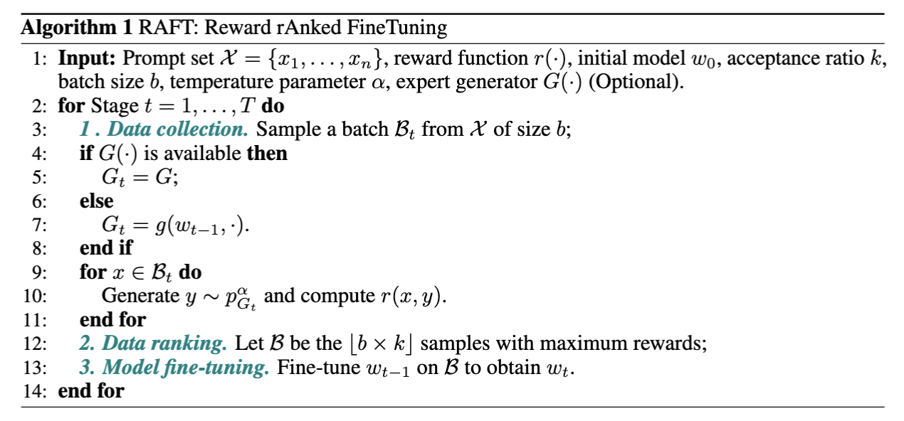
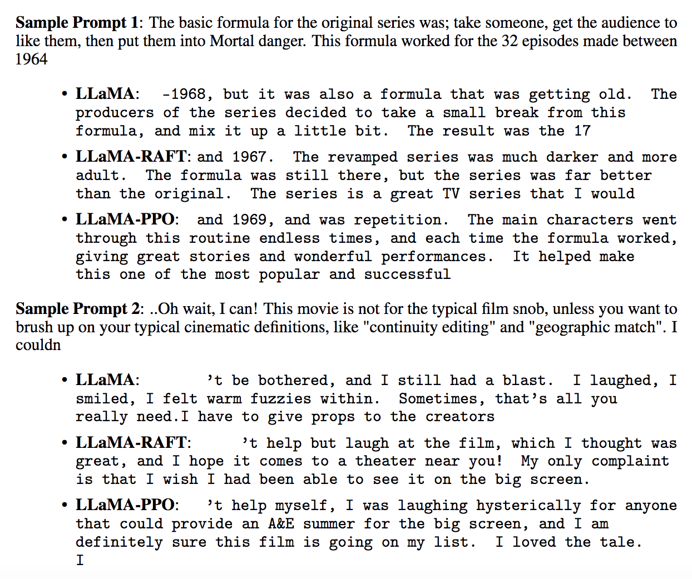

Reward rAnked FineTuning (RAFT)#
Introduction#
Extensive unsupervised training data used in generative foundational models can lead to implicit biases. Such biases can lead to low-quality samples, biased results, and unfairness, which can have substantial consequences. Therefore, aligning generative foundational models with human ethics and preferences has become a crucial procedure to ensure their well-behaved use in real-world scenarios. Previous works have primarily relied on Reinforcement Learning from Human Feedback (RLHF) to overcome this issue. RLHF tunes generative models using RL algorithms with a reward model supervised by human feedback. Despite the feasibility of RLHF, the inefficiency and instability of RL algorithms often pose significant challenges in aligning generative models. Therefore, there is an urgent need to streamline and enhance the alignment pipeline. In this work, we propose a generic framework, Reward rAnked FineTuning (RAFT), to align generative models. Given a reward model and a sufficient number of samples, we rank the best samples and reject ill-behaved ones to construct a streaming dataset. This dataset can then be used to align the generative model, and the procedure can be done under both offline and online settings. Furthermore, the sample generation process is gradient-free, so that RAFT supports black-box generators.
Our experiments demonstrate that the RAFT algorithm performs well on both large language models.
Algorithm#
Demo#
We provide a movie review chatbot aligned by our RAFT algorithm, where we encourage the chatbot to provide more positive responses for movie topics. Users can interact with the bot and share experiences about one’s favorite movies!
Customized Alignments#
The movie review chatbot was trained via ./scripts/run_raft_align.sh, with the base model set to llama-7b. The lora checkpoint for our demo can be obtained via
cd output_models
./download.sh llama7b-lora-movie-reviewer
cd -
To train a customized model with this script, one need to register the reward function in examples/raft_align.py:
from lmflow.datasets.dataset import Dataset
def reward_of(text: str) -> float
# ===== Defines this part with your own reward function =====
# ===== End =====
return reward
def reward_function(text_dataset: Dataset):
data_dict = text_dataset.to_dict()
assert data_dict["type"] == "text_only"
text_list = [ sample["text"] for sample in data_dict["instances"] ]
reward_list = [ reward_of(text) for text in text_list ]
return Dataset.create_from_dict({
"type": "float_only",
"instances": [
{ "value": reward } for reward in reward_list
]
})
...
reward_model.register_inference_function(reward_function)
...